← Índice de los 69 tutes de IDA
Tute 9 · Práctica: crackme HOLA_REVERSER
▶ video afín (mismo autor, en x64dbg): «15 Ejercicio 2 - Análisis estático» · se conecta con: Herramientas · IDA · Instrucciones · Flujo · Debugger · Números
INTRODUCCIÓN AL REVERSING CON IDA PRO DESDE CERO PARTE 9.
PRACTICA CON CRACKME HOLA_REVERSER.
Estamos viendo poco a poco como manejarnos en el LOADER, dejamos algunas cositas pendientes para más adelante que se necesita ver en un DEBUGGER por ejemplo como cambian los flags con ciertas instrucciones.
Vamos a ir practicando ejemplitos muy sencillos en este caso es un pequeño crackme ultra simple que compile en VISUAL STUDIO 2015 para practicar. Obviamente para que corra tendrán que tener la última versión de las VISUAL STUDIO 2015 C++ runtimes.
https://www.microsoft.com/es-ar/download/details.aspx?id=48145
Los paquetes de Visual C++ Redistributable instalan los componentes de tiempo de ejecución que se necesitan para ejecutar aplicaciones de C++ compiladas con Visual Studio 2015.
Se bajan el idioma de su sistema operativo lo instalan y listo.
Adjunto va el ejecutable que cree que se llama HOLA_REVERSER.exe y que corre de Windows 7 en adelante.
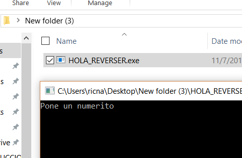
Al tipear un numero me dirá si soy buen o mal reverser, jeje.
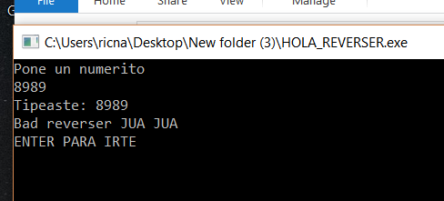
Vemos que es un código ultra sencillo, si lo abro en IDA en el LOADER solamente.
En mi caso (NO EN EL SUYO) la función main aparece entre las funciones, la puedo buscar con CTRL +F allí en esa pestaña, o donde tenga abierta la pestaña funciones, pero eso ocurre porque como yo compile el programa al hacerlo el VISUAL STUDIO crea un archivo pdb de símbolos el cual IDA detecta y carga los nombres de las funciones y variables que yo puse, vemos que en el mío al igual que en mi código fuente, me aparece main, más abajo printf, veremos qué pasa en el de ustedes.
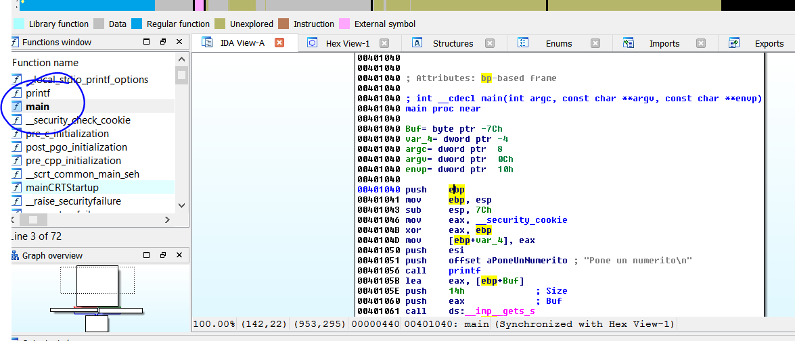
Bueno en el de ustedes como no tiene símbolos no aparece el main, lo cual es el escenario mas probable pues nadie distribuye un programa con símbolos.
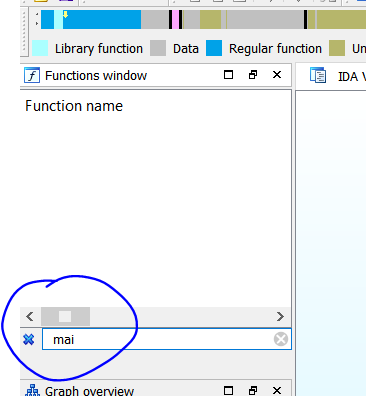
Normalmente tendremos símbolos para los modulos de sistema, no los que son propietarios de algún programa, salvo casos muy raros, en este caso este engendro es de mi autoría, por eso yo tengo los símbolos, pero lo analizaremos sin símbolos como cualquier hijo de vecino, jeje.
Vemos que acá al no tener símbolos
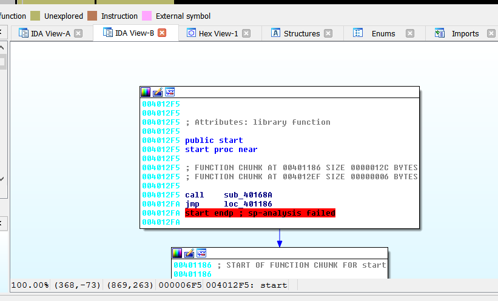
Estamos como un poco más pelados de información, pero bueno podemos mirar las strings a ver que hay.
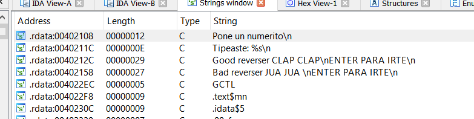
Tenemos las strings a la vista, las que usaba para decirnos que nos equivocamos al poner el numerito.
Podemos hacer doble click en “Pone un numerito\n”
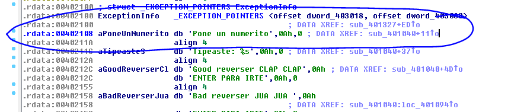
Allí vemos que 0x402108 es la dirección de la string, al lado de la dirección vemos el TAG que le pone a la misma siempre empieza con la letra “a” por ser una string ASCII y el resto tiene que ver con la misma string, para que sea fácil de reconocer en este caso el tag es aPoneUnNumerito luego db porque es una cadena de bytes
A la string que como antes si la pasamos a bytes con D vemos los mismos.
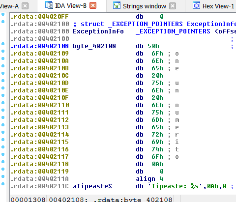
Ya ahora que nos aseguramos volvemos a crear la string con la tecla A.
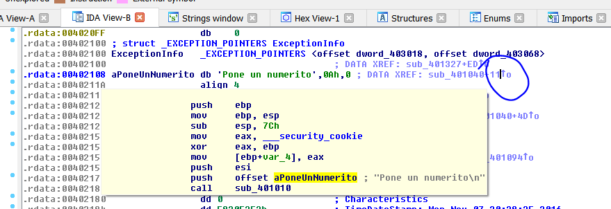
Pasando el mouse por la flechita de la referencia vemos de donde es llamada, pero más cómodo es apretar la X para ver la lista de referencias e ir allí.
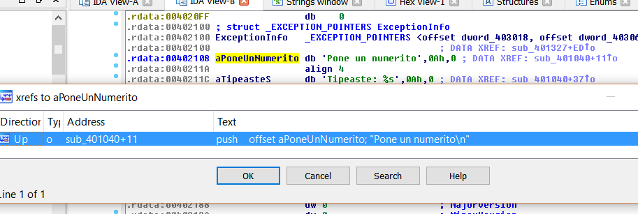
Bueno estamos en la función principal acá no se llama main, aunque el nombre del buffer que es bastante genérico le puso Buf.
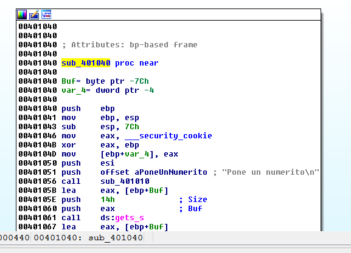
Se supone que no conocemos el código fuente, pero si lo veo
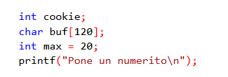
Me doy cuenta que de las variables que cree, algunas las optimizo como por ejemplo cookie y max que las reemplazo por constantes y dejo solo el buffer que en mi código era de 120 bytes decimal.
Un buffer es un espacio de memoria reservado para guardar datos, en este caso reserve 120 bytes.
¿Como podemos saber en IDA el largo de un buffer del stack si no tenemos el código fuente?
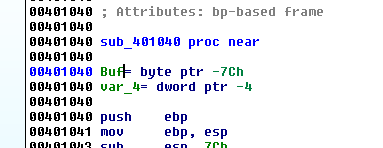
Allí vemos en la parte superior de la función la lista de variables y argumentos, haciendo doble click en cualquiera nos llevara a la vista estática del stack en la cual se ven las posiciones de las variables, buffers argumentos etc en forma estática y la distancia que hay entre ellas.
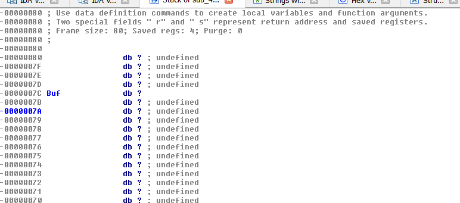
Allí vemos Buf pero está definida como byte db (IDA al no tener los símbolos no puede detectar el buffer) para cambiarla a array de caracteres o buffer, hacemos click derecho en la palabra Buf y elegimos la opción Array.
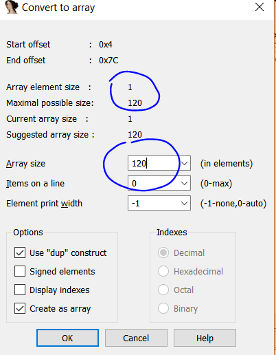
Allí vemos que se fija hasta la siguiente variable o lo que haya más abajo en el stack, detecta 120 decimal de largo y el array element es el largo de cada campo como es 1 es un array de caracteres o bytes y mide 120*1 o sea 120.
Si acepto.
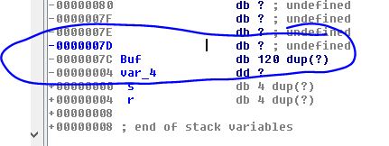
Veo el buffer de 120 bytes que coincide con mi código fuente, aunque el compilador podría hacerlo más grande, mientras que sea como mínimo 120 está bien, en este caso son iguales. DUP significa duplicar (realmente seria multiplicar) 120 veces el carácter ? porque no está definido el valor aun, es un buffer estático vacío.

Ya aclararemos más adelante la vista del stack estática, pero debajo de Buf hay una variable dword (dw) llamada var_4
S y R son el EBP guardado de la función padre de esta la que la llamo y el RETURN ADRESS como habíamos visto al entrar en la función primero se pasaban con PUSH los argumentos, luego se usaba un CALL para entrar en la función que guardaba el RETURN ADRESS o dirección de retorno en el stack, y arriba de S van las variables.
VARIABLES
…
…
S (stored ebp -generalmente viene del PUSH EBP que es la primera instrucción de la función)
R (return address)
ARGUMENTOS
O sea que como los argumentos se pushean al stack antes del CALL que pone el return address, quedaran debajo del mismo, y luego arriba del return address viene el STORED EBP que se genera por el PUSH EBP que generalmente es la primera instrucción de la función y luego arriba se deja espacio para las variables locales, ya lo veremos con más detalle.
Si hago X para ver de donde es llamada la función
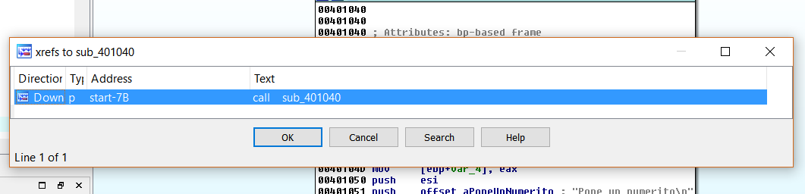
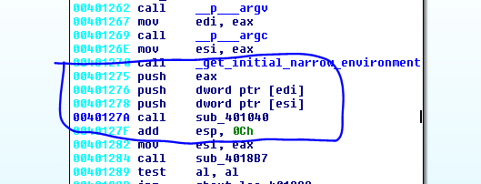
Y voy allí veo que hay unos PUSH que pasan argumentos a la función que cuando trabajo con SIMBOLOS los vio y aquí no, faltan los tres argumentos debajo, aquí está la imagen con símbolos.
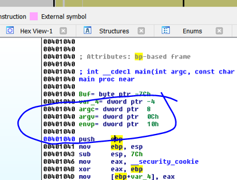
IDA detecto que nunca son usados, son los argumentos argc, argv y envp, que son argumentos por default en el main pero como nunca hubo ninguna referencia ni uso dentro de la función, IDA los elimino para aclarar el panorama.
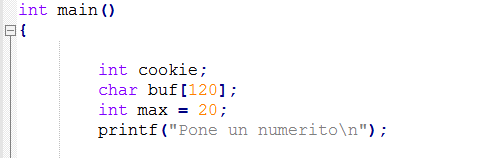
Además, en mi código ni siquiera lo había pasado como argumentos del main, así que todo bien es una función sin argumentos.
Cuando queremos ver en qué lugares se accede a una variable, la marcamos y apretamos X.
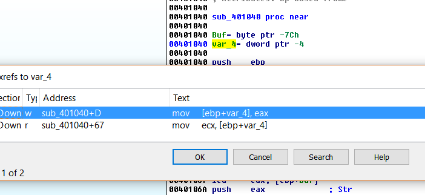
Vemos que var_4 se usa en dos lugares es para el que no sabe, una cookie que no la programe yo, es de protección contra stack overflows, la guarda al inicio de la función y la chequea antes de salir de la función, por ahora le ponemos de nombre COOKIE_DE_SEGURIDAD o CANARY.
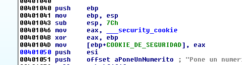
Vemos que cuando imprime las strings llama a un CALL que seguro termina yendo a printf para imprimir las strings.
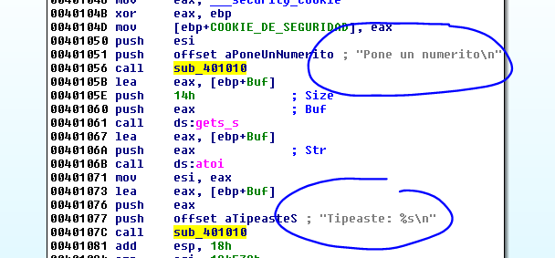
Vemos que en la versión con símbolos lo detecto directamente como printf
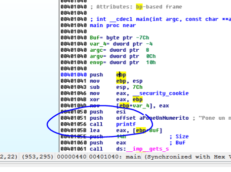
Pero igual si miramos dentro del CALL y sabiendo que los argumentos son las strings que termina imprimiendo por consola deducimos que es printf.
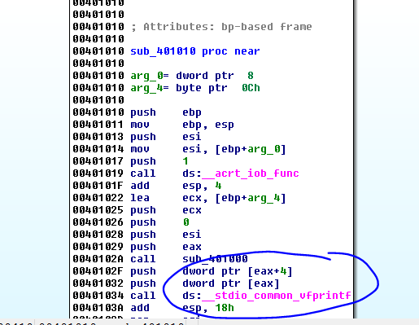
Vemos dentro de la función que termina en vfprintf, así que es eso la renombramos.
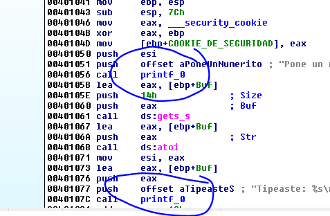
Nos queda solo el Buf de 120 bytes, veamos que hace con el.
Vemos que se lo pasa a get_s que es una función que recibe lo que tipeamos en una consola.
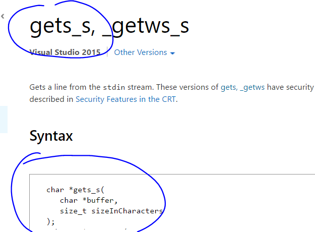
Vemos que tiene dos argumentos el puntero al buffer y el size máximo que nos permite tipear, veamos en nuestro caso.
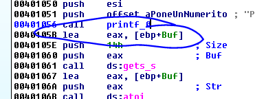
Habíamos dicho que el LEA hallaba la dirección de una variable, en este caso es la dirección del buffer Buf que se lo pasa con un PUSH EAX, y luego un PUSH 0x14 que pasa el máximo que permito tipear en la consola.
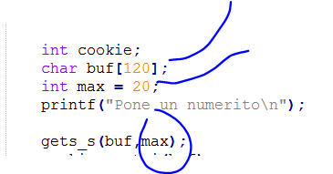
Vemos en mi código fuente lo mismo el llamado a get_s con dos argumentos el buf y el máximo que yo la había usado una variable max que valía 20, pero el compilador directamente para ahorrar espacio le puso 20 decimal o sea 0x14 a ese argumento ya que no se usa nunca más.
Por lo tanto, sin ejecutar ya sé que en el buffer tengo los caracteres que tipeo por consola.
Después el mismo puntero al buffer se pasa como argumento a la función atoi.
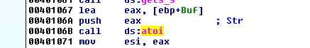
Que hace la misma.
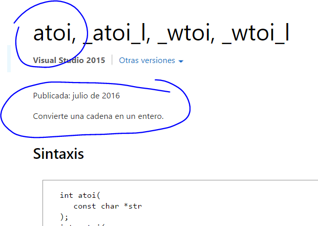
Convierte la cadena en un entero y si no puede porque desborda el máximo posible, da error devolviendo cero si no lo puede convertir, también si se sobrepasa los negativos da diferentes errores, pero la idea es que lo que se tipee lo convertirá a un número si tipea 41424344 lo convertirá en ese decimal, que como en assembler trabajamos con hexadecimales lo devolverá en valor HEXEADECIMAL en EAX.
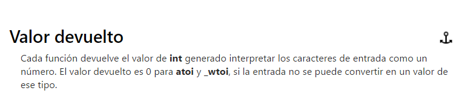
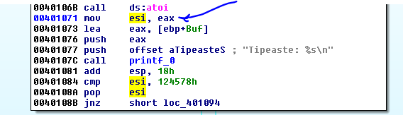
Vemos que el valor devuelto en EAX se pasa a ESI y luego de imprimir la string original que se tipeo, compara el valor de ESI con 0x124578.
Así que como lo que se tipea se interpreta como cadena de números decimales, que se devuelve como hexadecimal y se compara contra esa constante, pasándole el valor decimal de esa constante debería funcionar ya que luego si esa igualdad es válida.
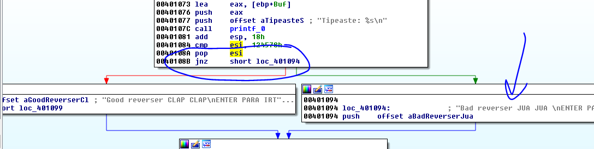
Vemos que si la comparación no es igual (JNZ) me lleva a BAD REVERSER y si son iguales a GOOD REVERSER, probemos en la consola de Python a ver qué valor decimal es 0x124578.
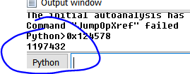
Tipeemos ese valor al ejecutar el crackme
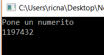
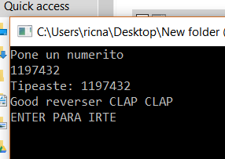
Bueno este es un ejemplo sencillito de reversing estático, para ir ambientándonos con el LOADER.
Hasta la parte 10
Ricardo Narvaja